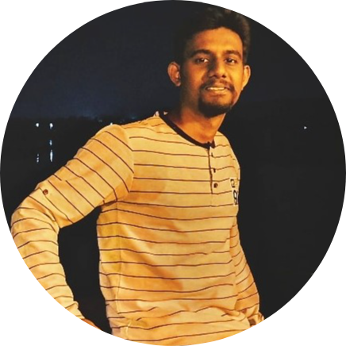

|  | Aditya Atmaram ParabPost-Graduated in MSCIT from Mumbai University |
To work with full determination , to work for an organization where i can utilized my talent and skills for better development of company and also for my personal career growth and to seek a challenging position in company.
| Qualification | Institute | Board/University | year | percentage |
|---|---|---|---|---|
| MSCIT | Vidyalankar school of Information technology | Mumbai University | 2020 | 72.08% |
| BSCIT | Model College | Mumbai University | 2018 | 73.46% |
| HSC | Model College | Maharashtra state Board | 2015 | 63.23% |
| SSC | St Mary's English school | Maharashtra state Board | 2013 | 79.09% |
| Date of Birth: | 05thFebruary 1998 |
| Email: | aaparab18@gmail.com |
| Address: | D-201,Om shivrudra CHS ,Chinchodipada ,Shubhash Road ,Dombivali West |
| Languages known: | English , Hindi & Marathi |
| Interest: | Trekking , Cooking & outdoor sports |
| Strengths: | Self-Learning , Hardworking , Punctual and have good problem solving ability |